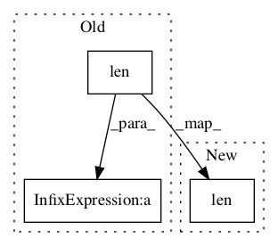

bfc36258ed16fe1e973b22c88f891141f87220d8,python/graph/test_gcn.py,,test_gcn,#Any#,95

Before Change
logger.debug("Suggested node: %d, feature: %d, grads: %s" % (attack_node, feature, grads))
if args.plot and x.shape[1] == 2: // plot only if 2D dataset
fsig = "%s_n%d_l%d" % (dataset, n_neighbors, len(n_neurons))
pdfpath = "temp/test_gcn_%s.pdf" % (fsig)
plot_model_diagnostics(attack_model, mod_node=mod_node, attack_grads=all_grads, pdfpath=pdfpath)
gcn.close_session()
After Change
logger.debug("Suggested node: %d, feature: %d, grads: %s" % (attack_node, feature, grads))
if opts.plot and x.shape[1] == 2: // plot only if 2D dataset
fsig = "%s_l%d" % (opts.get_opts_name_prefix(), len(n_neurons))
pdfpath = "%s/%s.pdf" % (opts.results_dir, fsig)
plot_model_diagnostics(attack_model, mod_node=mod_node, attack_grads=all_grads, pdfpath=pdfpath)
In pattern: SUPERPATTERN
Frequency: 3
Non-data size: 3
Instances
Project Name: shubhomoydas/ad_examples
Commit Name: bfc36258ed16fe1e973b22c88f891141f87220d8
Time:
Author: null
File Name: python/graph/test_gcn.py
Class Name:
Method Name: test_gcn
Project Name: NifTK/NiftyNet
Commit Name: d3b2bf0ee6daf2f76459822d36f9607c24ce1bc5
Time:
Author: null
File Name: niftynet/layer/subpixel.py
Class Name: ICNR
Method Name: __call__
Project Name: dpressel/mead-baseline
Commit Name: 0bdbdc76049e86654dcb5f0ee134c98dd93d514c
Time:
Author: null
File Name: layers/eight_mile/tf/layers.py
Class Name:
Method Name: unfold_tensor